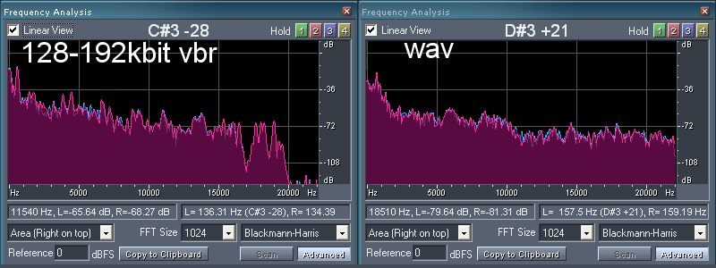
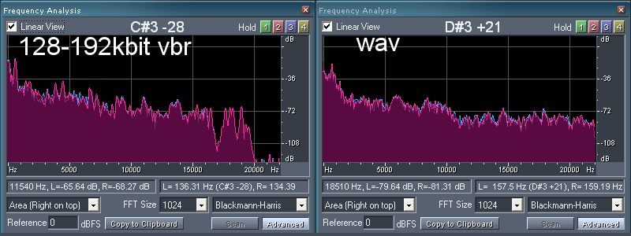

MP3: History, Theory, Encoding, and Psychoacoustics
Spectral and frequency analysis of losslessOverview
History
Modern Use
Theory
Mini
Modern Use
LAME Source
Visual Analysis
Spectral Analysis
Frequency Analysis
Lossless WAV


128kbps constant bit rate MP3


The difference between
192kbps constant bit rate MP3


256kbps constant bit rate MP3


128-192kbps variable bit rate MP3
 

64-256kbps variable bit rate MP3


128-256kbps variable bit rate MP3

Real World Studies
References
General
The History of MP3 (Bellis)
Theory
Overview of MP3 techniques (Bouvigne, 2001)
MP3: The Definitive Guide - Chapter 2 (Hacker, 2000)
Variable Bit Rate: Getting the best Bang for your Byte (Atwood, 2005)
Sample Rate and Bitrate: The Guts of Digital Audio (Connor, 2008)
Psychoacoustics Publications
Encoding
The AudioFile: Understanding MP3 compression (Wilburn, 2008)
Let's build an MP3-decoder (Edstrom, 2008)
Perceptual Coding: How Mp3 Compression Works (Sellars, 2000)
LAME Source Code
LAME Website
GPSYCHO - A LGPL'd Psycho-Acoustic Model
MP3 ISO Coding Standard (1991)